Next: Complex frequency analysis Up: Types of analysis Previous: Static analysis Contents
In a frequency analysis the lowest eigenfrequencies and eigenmodes of the structure are calculated. In CalculiX, the mass matrix is not lumped, and thus a generalized eigenvalue problem has to be solved. The theory can be found in any textbook on vibrations or on finite elements, e.g. [91]. A crucial point in the present implementation is that, instead of looking for the smallest eigenfrequencies of the generalized eigenvalue problem, the largest eigenvalues of the inverse problem are determined. For large problems this results in execution times cut by about a factor of 100 (!). The inversion is performed by calling the linear equation solver SPOOLES. A frequency step is triggered by the key word *FREQUENCY and can be perturbative or not.
If the perturbation parameter is not activated on the *STEP card, the frequency analysis is performed on the unloaded structure, constrained by the homogeneous SPC's and MPC's. Any steps preceding the frequency step do not have any influence on the results.
If the perturbation parameter is activated, the stiffness matrix is augmented by contributions resulting from the displacements and stresses at the end of the last non-perturbative static step, if any, and the material parameters are based on the temperature at the end of that step. Thus, the effect of the centrifugal force on the frequencies in a turbine blade can be analyzed by first performing a static calculation with these loads, and selecting the perturbation parameter on the *STEP card in the subsequent frequency step. The loading at the end of a perturbation step is reset to zero.
If the input deck is stored in the file “problem.inp”, where “problem” stands for any name, the eigenfrequencies are stored in the “problem.dat” file (notice that the format of the storage depends on the symmetry of the stiffness matrix; a nonsymmetric stiffness matrix results e.g. from contact friction and can lead to complex eigenvalues). Furthermore, if the parameter STORAGE is set to yes (STORAGE=YES) on the *FREQUENCY card the eigenfrequencies, eigenmodes, stiffness matrix and mass matrix are stored in binary form in a "problem.eig" file for further use (e.g. in a linear dynamic step).
All output of the eigenmodes is normalized by means of the mass matrix, i.e. the generalized mass is one. The eigenvalue of the generalized eigenvalue problem is actually the square of the eigenfrequency. The eigenvalue is guaranteed to be real (the stiffness and mass matrices are symmetric; the only exception to this is if contact friction is included, which can lead to complex eigenfrequencies), but it is positive only for positive definite stiffness matrices. Due to preloading the stiffness matrix is not necessarily positive definite. This can lead to purely imaginary eigenfrequencies which physically mean that the structure buckles.
Apart from the eigenfrequencies the total effective mass and total effective modal mass for all rigid body modes are also calculated and stored in the .dat-file. There are six rigid body modes, three translations and three rotations. Let us call any of these . It is a vector corresponding to a unit rigid body mode, e.g. a unit translation in the global x-direction. The participation factors are calculated by
| 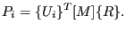 | (325) |
They reflect the degree of participation of each mode in the selected rigid
body motion. Recall that the modes are mass-normalized, consequently the unit
of the mode is
, the unit of the rigid body motion is
length. The effective modal mass is defined by  , the total effective
modal mass by
, the total effective
modal mass by
| (326) |
(unit: mass
 length
length ). The total effective mass is the size of the rigid motion, i.e. it is the
internal product of the rigid motion with itself:
). The total effective mass is the size of the rigid motion, i.e. it is the
internal product of the rigid motion with itself:
| (327) |
If one would calculate infinitely many modes the total effective modal mass should be equal to the total effective mass. Since only a finite number of modes are calculated the total effective modal mass will be less. By comparing the total effective modal mass with the total effective mass one gains an impression whether enough modes were calculated to perform good modal dynamics calculation (at least for the rigid motions).
A special kind of frequency calculations is a cyclic symmetry calculation for which the keyword cards *SURFACE, *TIE, *CYCLIC SYMMETRY MODEL and *SELECT CYCLIC SYMMETRY MODES are available. This kind of calculation applies to structures consisting of identical sectors ordered in a cyclic way such as in Figure 137.
For such structures it is sufficient to model just one sector (also called datum sector) to obtain the eigenfrequencies and eigenmodes of the whole structure. The displacement values on the left and right boundary (or surfaces) of the datum sector are phase shifted. The shift depends on how many waves are looked for along the circumference of the structure. Figure 138 shows an eigenmode for a full disk exhibiting two complete waves along the circumference. This corresponds to four zero-crossings of the waves and a nodal diameter of two. This nodal diameter (also called cyclic symmetry mode number) can be considered as the number of waves, or also as the number of diameters in the structure along which the displacements are zero.
The lowest nodal diameter is zero and corresponds to a solution which is
identical on the left and right boundary of the datum sector. For a structure
consisting of N sectors, the highest feasible nodal diameter is N/2 for N even
and (N-1)/2 for N odd. The nodal diameter is selected by the user on the
*SELECT CYCLIC SYMMETRY MODES card. On
the *CYCLIC SYMMETRY MODEL card, the number of base
sectors fitting in
 is to be provided. On the same card the user
also indicates the number of sectors for which the solution is to be stored in
the .frd file. In this way, the solution can be plotted for the whole
structure, although the calculation was done for only one sector. The
rotational direction for the multiplication of the datum sector is from the
dependent surface (slave) to the independent surface (master).
is to be provided. On the same card the user
also indicates the number of sectors for which the solution is to be stored in
the .frd file. In this way, the solution can be plotted for the whole
structure, although the calculation was done for only one sector. The
rotational direction for the multiplication of the datum sector is from the
dependent surface (slave) to the independent surface (master).
Mathematically the left and right boundary of the datum sector are coupled by MPC's with complex coefficients. This leads to a complex generalized eigenvalue problem with a Hermitian stiffness matrix, which can be reduced to a real eigenvalue problem the matrices of which are twice the size as those in the original problem.
The phase shift between left and right boundary of the datum sector is given
by  , where N is the nodal diameter and M is the number of base
sectors in
, where N is the nodal diameter and M is the number of base
sectors in
 . Whereas N has to be an integer, CalculiX allows M to
be a real number. In this way the user may enter a fictitious value for M,
leading to arbitrary phase shifts between the left and right boundary of the
datum sector (for advanced applications).
. Whereas N has to be an integer, CalculiX allows M to
be a real number. In this way the user may enter a fictitious value for M,
leading to arbitrary phase shifts between the left and right boundary of the
datum sector (for advanced applications).
For models containing the axis of cyclic symmetry (e.g. a full disk), the nodes on the symmetry axis are treated differently depending on whether the nodal diameter is 0, 1 or exceeds 1. For nodal diameter 0, these nodes are fixed in a plane perpendicular to the cyclic symmetry axis, for nodal diameter 1 they cannot move along the cyclic symmetry axis and for higher nodal diameters they cannot move at all. For these kind of structures calculations for nodal diameters 0 or 1 must be performed in separate steps.
Adjacent structures with datum sectors which differ in size can be calculated by tying them together with the *TIE,MULTISTAGE keyword. This works well if the size difference of the datum sectors is not too large. This is illustrated by file multistage.inp in the test examples.
Eigenmodes resulting from frequency calculations with cyclic symmetry can be interpreted as traveling waves (indeed, all eigenmode solutions exhibiting a complex nature, i.e. containing a real and imaginary part, are traveling waves). Therefore, a circumferential traveling direction can be determined. This traveling direction is determined in CalculiX and stored in the .dat-file together with the axis reference direction.
To determine the traveling direction (cw or ccw) the displacement solution at the center of each element is calculated:
| 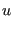 | |||
| 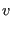 | |||
| 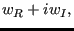 | (328) |
where u,v and w are the displacement components, the subscript R denotes the real part, I the imaginary part. The sum of the square amounts to
| (329) |
or
| (330) |
In the latter equation  is the amplitude,
is the amplitude,  the phase angle, both of
which depend on the actual location, here described by the cylindrical
coordinates
the phase angle, both of
which depend on the actual location, here described by the cylindrical
coordinates  ,
,  and
and  . The motion of
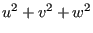 is now
focussed on in order to determine the traveling direction of the eigenmodes. Taking the frequency of the eigenmode into
account one arrives at:
. The motion of
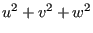 is now
focussed on in order to determine the traveling direction of the eigenmodes. Taking the frequency of the eigenmode into
account one arrives at:
| 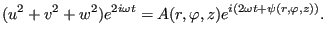 | (331) |
From this expression the wave character of the response is obvious. For an observer traveling around the axis (at constant  and
and  ) with the local wave velocity one has:
) with the local wave velocity one has:
| (332) |
or
| 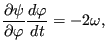 | (333) |
leading to
| 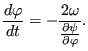 | (334) |
From the last equation one finds that the traveling direction depends on the
sign of
 . If this quantity is positive the
traveling direction is backwards (or ccw when looking in the positive direction of
the axis), else it is forwards. The partial derivative of obtained by
slightly moving the actual position in positive
. If this quantity is positive the
traveling direction is backwards (or ccw when looking in the positive direction of
the axis), else it is forwards. The partial derivative of obtained by
slightly moving the actual position in positive  -direction out of
the center of the element and reevaluating
-direction out of
the center of the element and reevaluating  . This procedure is
repeated for all elements. For good accuracy the response from the element
for which
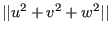 is maximum (always evaluated at the center of
the element) is taken.
. This procedure is
repeated for all elements. For good accuracy the response from the element
for which
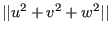 is maximum (always evaluated at the center of
the element) is taken.
Finally one word of caution on frequency calculations with axisymmetric elements. Right now, you will only get the eigenmodes corresponding to a nodal diameter of 0, i.e. all axisymmetric modes. If you would like to calculate asymmetric modes, please model a segment with volumetric elements and perform a cyclic symmetry analysis.